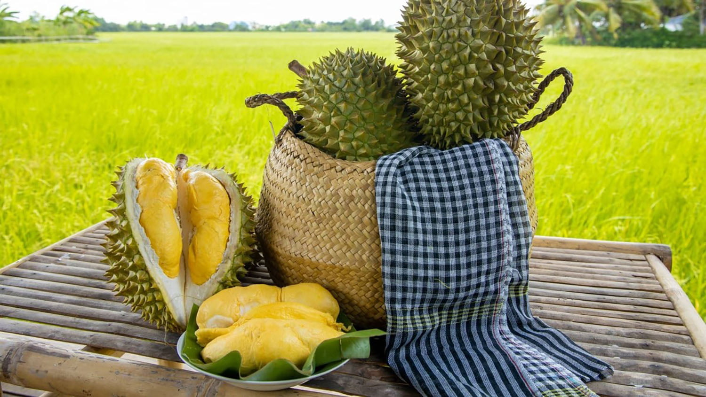
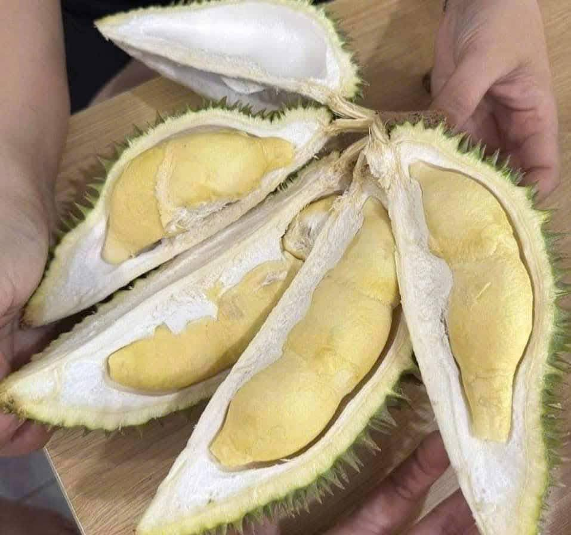

Cẩm nang sầu riêng
Hướng dẫn cách chọn lựa, phân biệt, bảo quản và chế biến sầu riêng.

1. Cách chọn sầu riêng ngon
Hình dáng: Tròn đều, các hộc chứa cơm lộ rõ, không bị móp méo.
Gai quả: Gai to, cứng, đầu gai hơi tròn và mọc thưa.
Cuống quả: Cuống phải còn tươi, ẩm và có mủ nhựa khi bấm nhẹ.
Mùi thơm: Có mùi thơm nồng đặc trưng, bay xa tự nhiên.


2. Phân biệt các giống phổ biến
Ri6 & Dona: Ri6 quả hình thoi, cơm vàng đậm, ngọt béo. Dona quả thuôn dài, cơm vàng nhạt, ngọt thanh.
Musang King: Có hình ngôi sao 5 cánh rõ rệt ở phần đáy quả, cơm vàng như nghệ, vị béo ngậy.
Chuồng Bò: Quả nhỏ, tròn, cơm rất mềm dẻo và ngọt thanh.

3. Cách khui (mở) trái sầu riêng
Bước 1: Tìm các đường kẻ phân chia múi (đường rãnh) ở phần rốn dưới đáy quả.
Bước 2: Dùng mũi dao nhọn đâm sâu vào chính giữa rốn quả.
Bước 3: Lắc nhẹ lưỡi dao rồi tách dọc theo các đường gân rãnh để múi tự bung ra.

4. Cách bảo quản cơm sầu riêng
Ngăn mát: Tách múi cho vào hộp nhựa/thủy tinh kín, bảo quản và ăn trong vòng 2-3 ngày.
Ngăn đông: Bọc kín bằng màng bọc thực phẩm rồi cấp đông, có thể lưu trữ được vài tháng.

5. Sầu riêng làm món gì ngon?
Tráng miệng: Chè Thái sầu riêng, sinh tố sầu riêng bơ, kem sầu riêng, tàu hũ sầu riêng.
Bánh ngọt: Bánh Crepe sầu riêng, bánh pía, bánh su kem nhân sầu riêng.
Món độc đáo: Sầu riêng nướng giấy bạc, xôi nếp than sầu riêng.